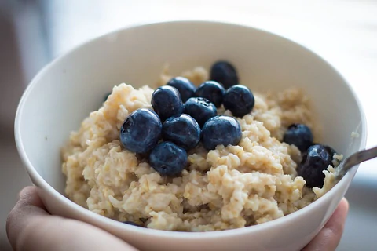

This one you'll have to make the night before, but it's worth the wait. Plus, you'll get all that fiber I was talking about!
Ingredients:
- 1 c soymilk
- 2 tbsp chia seeds
- 1/2 cup quick oats
- 1/2 c each blueberry, raspberries
- 1 tbsp almond butter
- 1/2 cup walnuts - chopped
- 1/4 tsp honey
Nutrition:
- Protein: 26g
- Fat: 63g
- Carbs: 51g
Instructions
- At night, mix the milk, chia seeds, and oats in an airtight container
- In the morning, mix all the ingredients together
- Enjoy!
Home